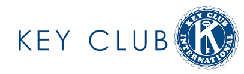

In sophomore year of high school, I founded our school’s first Key Club. Key Club is a nationally recognized student-led organization dedicated to helping out the local community while also providing opportunity for character building and the development of leadership skills. During my time serving as both president and vice president, I learned many new skills and lessons which still shape who I am today.
Having previously been president of the Builders club in middle school, it was a little disappointing to not have a community service club in high school. In sophomore year, one of our teachers was interested in starting the club and reached out to me asking if I wanted to help. I was initially hesitant, but after meeting with my teacher, I decided to step forward and become the president. This new position came with loads of new challenges: running general meetings and speaking in front of large groups, leading board meetings and coordinating with other officers, planning community service projects. These were all new areas that I had no experience in before but being president forced me to learn the necessary skills to thrive in the position.
As president, one of the most important skills needed was the ability to coordinate with a team. Having multiple projects chaired by multiple people can get confusing however, keeping everyone on the same page along with keeping deadlines was an important part of my job. Anyone can plan a project however, making sure people know about it, coordinating which officers and advisors can go along with recording the hours worked are things needed to be considered when planning a project. To this end, we had weekly meetings where we would discuss the details of our projects and assign people to record hours and supervise any participants.
Outside of direct club activities, being key club president also took a lot of coordination with other clubs within our region. Our club was sponsored by the local Kiwanis club, so we had to attend their meetings and provide bi-monthly updates on our activities. We also had to attend meetings with other key clubs in our division. During these meetings we’d coordinate on bigger projects between multiple clubs along with doing a service activity. All these meetings provided me with the opportunity to improve my networking skills to build better relationships with those around us.
Through key club, I was given the opportunity to be able to learn many soft skills that are essential to the person I am today. As president, managing my board members and the club taught important lessons in leadership and communication while meeting with other clubs and the division at large taught me how to network and opened up many opportunities I’d never have had the chance of doing before. I hope continue growing these skills through other community service opportunities like Circle K and beyond into my professional career.